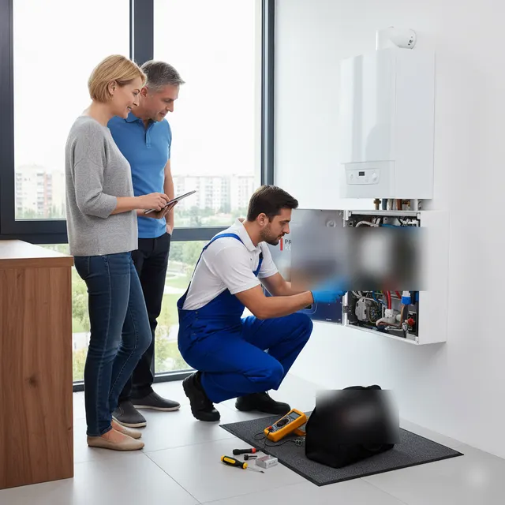
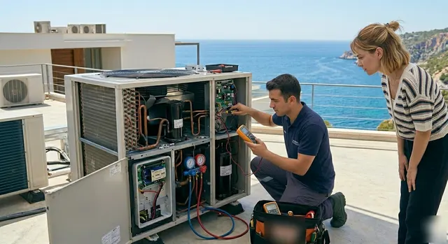
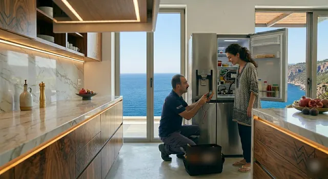
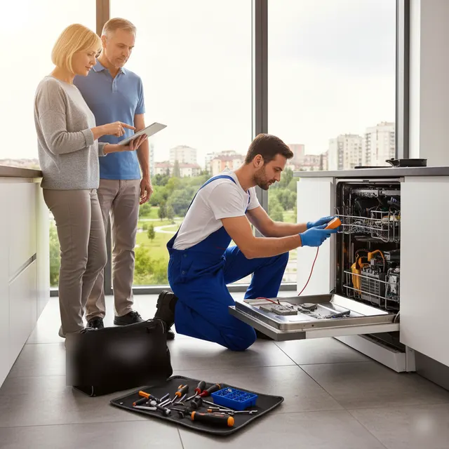

Hangi cihazınız arızalı? Listeden seçin, arayın.
Beyaz eşya, kombi ve klima için yapılan tüm arıza ve bakım işlerini tek listede topladık. Cihazınızı seçin, belirtiyi okuyun; randevu ve fiyat bilgisi için tek numaradan ulaşın.



Cihaza göre yaptığımız işler
Her satırda o cihazda en sık karşılaştığımız belirtiler ve yerinde yaptığımız işlemler var. Listede olmayan bir arıza için de arayabilirsiniz.
Sık belirtilerBuzdolabıSoğutmama, alt-üst bölme sıcaklık farkı, karlanma, durmadan çalışan motor, kapı altında su.
Yapılan işlemlerTermostat ve sensör değişimi, fan motoru, defrost rezistansı, kart onarımı, kapı contası.
Ara →
Sık belirtilerÇamaşır makinesiSu almama veya boşaltmama, sıkmama, yüksek ses ve titreme, kapının açılmaması.
Yapılan işlemlerPompa ve filtre temizliği, rulman ve amortisör değişimi, kömür, kapı kilidi, rezistans.
Ara →
Sık belirtilerBulaşık makinesiKirli yıkama, dipte su kalması, ısıtmama, program ortasında durma, yanıp sönen ışıklar.
Yapılan işlemlerSirkülasyon ve tahliye pompası, ısıtıcı, su seviye müşiri, pervane ve filtre bakımı.
Ara →Sık belirtilerKombiSıcak su gelmemesi, basınç düşmesi, peteklerin ısınmaması, ateşleme yapmama, hata kodu.
Yapılan işlemlerYıllık bakım, pompa ve fan, 3 yollu vana, eşanjör temizliği, kart ve sensör arızaları.
Ara →Sık belirtilerKlimaSoğutmama veya ısıtmama, iç üniteden su damlaması, kötü koku, dış ünitenin çalışmaması.
Yapılan işlemlerBakım ve filtre temizliği, kaçak tespiti ve gaz tamamlama, tahliye hattı, montaj ve demontaj.
Ara →Sık belirtilerFırın, ocak ve kurutmaIsıtmayan fırın, yanmayan göz, dengesiz pişirme, kurutmayan veya su haznesi uyarısı veren makine.
Yapılan işlemlerRezistans ve termostat, fan motoru, zaman ayarı, kondenser temizliği, kayış ve sensör.
Ara →Hangi cihaz, hangi mevsim bakım ister?
Arızaların çoğu, cihazın en yoğun kullanıldığı dönemden önce yapılmayan bakımdan çıkar. İzmir iklimine göre önerdiğimiz takvim:
Kombi bakımı
Isınma sezonu başlamadan yanma odası, filtre ve basınç kontrolü.
Klima bakımı
Sıcaklar gelmeden filtre, iç ünite temizliği ve gaz basıncı kontrolü.
Çamaşır ve bulaşık
Filtre ve pompa haznesi temizliği, kireç ve deterjan birikintisi kontrolü.
Buzdolabı
Arka kondenser tozunun alınması, conta ve tahliye deliği kontrolü.
Basit kontrollerle sorun çözülebilir
Bazı arızalar küçük bir ayardan kaynaklanır. Servis çağırmadan önce şunlara bakmanız zaman kazandırabilir:
1Elektrik
- Fiş takılı ve priz çalışıyor mu?
- Sigorta veya kaçak akım şalteri atmış mı?
- Uzatma kablosu kullanılıyorsa doğrudan prize takın.
2Su ve basınç
- Çamaşır ve bulaşık makinesinde su vanası açık mı?
- Kombi basıncı 1–2 bar arasında mı?
- Gider hortumu bükülmüş veya tıkalı mı?
3Filtre ve ayar
- Klima kumandası doğru modda (soğutma/ısıtma) mı?
- Klima ve bulaşık filtresi temiz mi?
- Buzdolabı termostatı yanlışlıkla kısılmış mı?
Dikkat: Gaz kokusu alırsanız kombiyi kapatın, pencereleri açın, elektrik düğmelerine dokunmayın ve 187 doğalgaz acil hattını arayın. Cihazın iç kısmına kendiniz müdahale etmeyin.
İzmir'in her ilçesine adrese servis
Merkez ilçelere gün içinde, çevre ilçelere randevuyla geliyoruz.
- Konak merkez
- Karşıyaka merkez
- Bornova merkez
- Buca merkez
- Bayraklı merkez
- Çiğli merkez
- Karabağlar merkez
- Gaziemir merkez
- Balçova merkez
- Narlıdere merkez
- Güzelbahçe randevu
- Menemen randevu
- Torbalı randevu
- Menderes randevu
- Urla randevu
- Kemalpaşa randevu
- Seferihisar randevu
- Tire randevu
Servis nasıl ilerler?
Arayın. Cihazı, belirtiyi ve ilçenizi söyleyin.
Saat belirleyelim. Size uygun zaman aralığında gelelim.
İnceleme ve fiyat. Arıza yerinde bulunur, ücret işe başlamadan söylenir.
Onarım ve deneme. Onayınızla tamir edilir, cihaz yanınızda çalıştırılır.
Aklınıza takılanlar
Servis için ne kadar önceden aramalıyım?
Arıza olduğunda hemen arayabilirsiniz. Randevu saati yoğunluğa ve ilçenize göre telefonda birlikte belirlenir.
Telefonda fiyat söylüyor musunuz?
Arızayı dinleyip olası işlemler hakkında ön bilgi veriyoruz. Kesin ücret, cihaz yerinde incelendikten sonra ve işe başlamadan önce söylenir.
Kombi bakımında neler yapılır?
Yanma odası ve eşanjör temizliği, filtre kontrolü, basınç ve genleşme tankı kontrolü, baca ve gaz bağlantılarının sızdırmazlık kontrolü yapılır.
Klima bakımı ne kadar sürer?
Standart bir split klimanın iç ve dış ünite bakımı genellikle bir saat civarında tamamlanır; kirlilik durumuna göre değişebilir.
Hafta sonu servis var mı?
Cumartesi günleri de servis veriyoruz. Pazar günleri için telefonla bilgi alabilirsiniz.
Değişen parçayı görebilir miyim?
Evet. Değiştirilmesi gereken parça önce size gösterilir, onayınızdan sonra takılır; eski parçayı isterseniz size bırakırız.
Cihazınızı söyleyin, randevunuzu verelim
Beyaz eşya, kombi veya klima; tek numaradan arayın, adresinize uygun saati birlikte belirleyelim.
0850 307 78 51